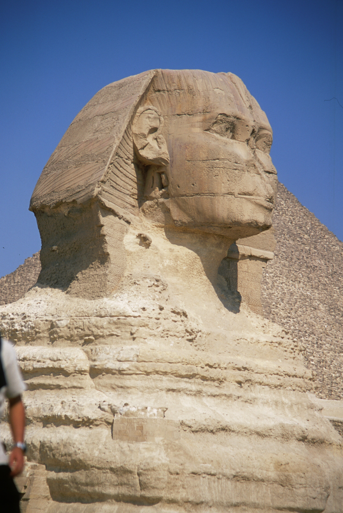

The Great Sphinx is at Giza near Cairo in Egypt
It sits in a depression to the south of the pyramid of the Pharaoh Khafre (Chephren) at the west bank of the Nile River. The Sphinx is a stone sculpture of a creature with a human head and a lion's body. The greatest monumental sculpture in the ancient world, its body is 200 feet (60m) long and 65 feet (20m) tall. Its face is 13 feet (4m) wide. It is the oldest known monumental sculpture in Egypt. It is thought to have been built by ancient Egyptians of the Old Kingdom in the reign of the Pharaoh Khafre (c. 2558–2532 BC).